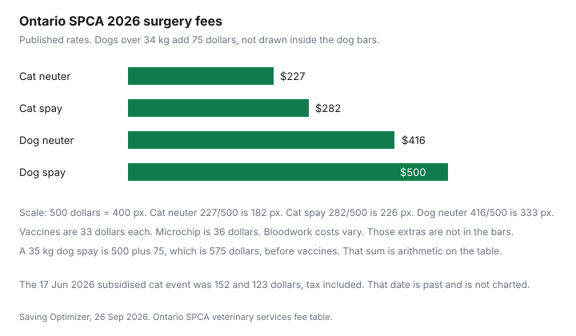

Pets · Canada
Low-Cost Spay and Neuter in Canada: SPCA and Humane Society Clinics, Subsidies and What's Extra
A spay or neuter is one of the few pet procedures with a public Canadian price list you can read before you book. This page uses the Ontario SPCA’s 2026 table, the extras that table leaves out, and the subsidy routes that were actually printed. A private-clinic range that circulates in conversation was not on a page opened on 26 Sep 2026, so it is omitted. Timing for an individual animal is your veterinarian’s call. This is education, not a booking and not veterinary advice.
Key takeaways
- Ontario SPCA 2026: feline spay $282, feline neuter $227, dog spay $500, dog neuter $416. Dogs over 34 kg or 75 lb add $75.
- Included: presurgical exam, surgery, day hospitalisation, anaesthesia, postoperative pain medication, nail trim, tattoo. Vaccines are $33 each. Microchip is $36. Bloodwork costs vary.
- A deposit holds the appointment. Cancel seven or more days ahead for a full deposit refund. Inside seven days, the spay cancellation fee is $100.
- The 17 Jun 2026 York Region Neuter Scooter listed cat surgery at $152 and $123, tax included, for people on subsidised income. That date is past.
- BC SPCA offers a voucher program tied to a Statistics Canada low-income range. The voucher amount was not printed. Put the known Ontario fees on a sinking-fund line.
Ontario SPCA 2026 fees: about $282 cat spay, $227 cat neuter, $500 dog spay, $416 dog neuter
The veterinary-services page and the financial-assistance form both print the same 2026 surgery rates. Feline spay $282. Feline neuter $227. Dog spay $500. Dog neuter $416. Dogs over 34 kg or 75 lb add $75, and that surcharge is listed under additional services that are not eligible for a discount on the form page. A 35 kg dog spay on this table is $500 plus $75, which is $575, before any vaccine or bloodwork. That addition is arithmetic on the published surcharge. It is not a new quote.
The “what’s included” list on the form page is specific: presurgical examination, surgical procedure, day hospitalisation, ear tips for feral cats, anaesthesia and anaesthetic medications, postoperative pain medication, nail trim, and tattoo. A feral-cat package of surgery, rabies, FVRCP, and an ear tip is $80, and that line is also marked not eligible for the discount. The clinics are in Sudbury, Stouffville, Barrie, Whitby, and Thunder Bay. Addresses and phones are on the clinic directory. These clinics do not treat emergencies.
| Line | Fee | Note on the page |
|---|---|---|
| Feline spay | $282 | 2026 veterinary service fees |
| Feline neuter | $227 | 2026 veterinary service fees |
| Dog spay | $500 | 2026 veterinary service fees |
| Dog neuter | $416 | 2026 veterinary service fees |
| Dogs over 34 kg or 75 lb | +$75 | Listed as not eligible for the discount |
| Rabies, FVRCP, FeLV, DA2PP, leptospirosis, Bordetella | $33 each | Recommended at least two weeks before surgery, or given at surgery |
| Microchip | $36 | Extra |
| Pre-op exam | $25 | Separate from the presurgical exam described as included in surgery |
| Bloodwork | Costs vary | Ask at booking. Not a printed dollar |
| Onesie | $37 | The services page also lists an e-collar or surgical onesie at $20 |
| E-collar | $20 | On the subsidy-form extras list |
| Cardboard carrier | $15 | Extra |
| Feral cat package | $80 | Surgery, rabies, FVRCP, ear tip. Not eligible for the discount |

Subsidized events and income-based programs
The public fees above are already the charity’s posted prices. A further subsidy is a second step. The financial-assistance form says to complete it if you need help, and that someone will contact you. For a spay booking, the page tells you to register at the spay page and check “request for financial assistance.” It does not say the $282 becomes a specific lower number. Until you have that conversation, budget the posted fee.
One dated subsidised event was still on the site on 26 Sep 2026. The Neuter Scooter for York Region cat families was Wednesday 17 Jun 2026, pickup at 6:30 a.m. at The Link in Georgina, 20849 Dalton Road, Sutton West, and return at 4:30 p.m. It was only for routine surgeries and for individuals on subsidised income. Cats in good health, 4 months to 8 years: neuter $123 tax included, spay $152 tax included, each including a physical exam. Payment was due in full before 6 Jun 2026. A $20 transportation fee was due in cash that morning. Rabies and microchip might be available for an additional fee that the page did not print. Do not treat 17 Jun 2026 as your appointment. Use it as proof that a subsidised cat price, when this charity prints one, can be far below the $282 public spay, and that the event has rules on income, age, and health.
What costs extra: vaccines, microchip, bloodwork, pain meds
Pain medication that is sent home as “postoperative pain medication” is inside the included list. Anything the clinic calls additional medication is not. Vaccines are the clearest extra: $33 each for rabies, FVRCP, FeLV, DA2PP, leptospirosis, and Bordetella. The page recommends vaccination at least two weeks before the appointment, with proof if the animal was vaccinated elsewhere. If you cannot do that, vaccines can be given at surgery. A dog who needs rabies and DA2PP at $33 each adds $66 to a $500 spay, which is $566 before the large-dog surcharge or a microchip. That stack is arithmetic so you can see the extras. Your animal may need a different set. Ask.
Microchip is $36. Bloodwork has no printed price. The event page also said pre-anaesthetic bloodwork is strongly recommended for animals over seven years of age. Onesie $37 and e-collar $20 are small next to surgery and easy to forget. The clinic’s own aftercare, which you should follow rather than a general internet rule, includes an Elizabethan collar or onesie for 7 to 10 days and limited activity for 14 days. Male cats, the FAQ says, do not have sutures. Those are the Ontario SPCA’s instructions for its patients.
Private clinic quotes vs non-profit clinics
A private quote is the piece of paper from a clinic that is not this charity. This build did not open a private Ontario surgery menu, so a commonly repeated private range is not printed. Compare a private estimate to the Ontario SPCA table only after both sides list the same inclusions: exam, anaesthesia, pain medication, tattoo, and whether vaccines and bloodwork are inside the number. A lower headline that excludes anaesthesia is not lower.
The non-profit constraints are part of the price. No emergencies. Cats and dogs. A deposit. A cancellation fee. Possible waits. Dogs in heat are not spayed. Breeders, pet businesses, and animals intended for sale are not eligible. If those constraints do not fit, the private estimate is the relevant number, and you should still itemise it. Put whichever figure you are actually going to pay on a zero-based budget line for that month, including the deposit, so the rest of the month is planned around a real outflow.
Timing and waitlists
The Ontario SPCA says each animal is assessed and cleared only when healthy and at an appropriate age and weight. It says pre-pubertal surgery is widely accepted in animal welfare, points to the Canadian Veterinary Medical Association position that supports spaying and neutering shelter animals before sexual maturity, and says its own adopted animals are altered before they go home because later compliance can be low. That is the charity’s policy for animals in its care. It is not an instruction to book your pet on a birthday this page invents. Ask your veterinarian, and ask the clinic what age and weight it will accept for the species you have.
The wait is operational. A deposit is required because volume is high. Seven or more days’ notice gets a full refund of the booking deposit, or a transfer of that deposit if you reschedule. Less than seven days, the refund is net of a $100 spay and neuter cancellation fee. If the animal is turned away the same day for a missed fast or for failing medical criteria, a cancellation fee can apply and refunds are at the clinic manager’s discretion. Call before you drive if the animal is in heat, especially a dog. The page says it does not spay dogs in heat. Cats may be spayed in heat because their cycles are harder to time, and the page still calls waiting until the cycle ends ideal.
Other provinces' programs (verify)
The BC SPCA “Spay or neuter your pet” page describes a Community Spay and Neuter Program that provides a voucher toward part of the surgery cost and a BC Pet Registry microchip, for people for whom cost is a barrier. Eligibility on that page includes an income within the low-income range defined by Statistics Canada, and living in a community where the program is currently offered. The page did not print the voucher’s dollar value or the Statistics Canada dollar cutoffs, so those figures are not filled in here. If your community is not on the form, the page says some local programs are not run by the BC SPCA. It gives one priced example: the City of Burnaby offers a $15 rebate for cats that are spayed or neutered, redeemed at Burnaby City Hall. Confirm the rest with the organisation named on that page.
Niagara, Edmonton, and other humane-society fee pages were not opened, so they are not given numbers. The habit is the same as Ontario: open the society’s own fee PDF or web table, write the date, add the extras, and ignore a private range you cannot tie to a clinic. Hold the deposit in the same reachable savings account you use for other irregular bills, so a seven-day cancellation clock is not also a cash-flow crisis.
Sources & date stamps
- Ontario SPCA veterinary services, 2026 fee table, inclusions, clinic list, heat policy, and cancellation rules. Opened 26 Sep 2026.
- Ontario SPCA financial-assistance form, same surgery fees, “what’s included,” and extras marked not eligible for a discount. Opened 26 Sep 2026.
- Ontario SPCA Neuter Scooter event page: 17 Jun 2026, Georgina, $152 and $123 tax included, $20 cash transport, subsidised income, cats 4 months to 8 years. Opened 26 Sep 2026. The date is past.
- BC SPCA community spay and neuter page: voucher plus microchip, Statistics Canada low-income range, community list, Burnaby $15 cat rebate. Voucher dollars not printed. Opened 26 Sep 2026.
- Private-clinic price ranges were not opened and are not used.
Frequently asked questions
How much does a low-cost spay or neuter cost?
On the Ontario SPCA 2026 fee table, opened 26 Sep 2026, a cat spay is $282, a cat neuter is $227, a dog spay is $500, and a dog neuter is $416. Dogs over 34 kg, which the table also lists as 75 lb, add $75. A private-clinic range was not on a page opened for this draft, so it is not quoted. Confirm the current table before you pay a deposit.
What's included in the price?
The subsidy-form page says the surgery fee includes a presurgical examination, the procedure, day hospitalisation, anaesthesia and anaesthetic medications, postoperative pain medication, a nail trim, and a tattoo. Feral-cat packages include an ear tip. Vaccines, a microchip, bloodwork, an e-collar, and a onesie are extra on that page. Bloodwork is listed as “costs vary.”
Who qualifies for subsidized surgery?
The posted $282 to $500 fees are the Ontario SPCA’s public 2026 rates, not a secret subsidised price. The financial-assistance form is a separate request, and the page does not print how many dollars a subsidy removes. The 17 Jun 2026 Neuter Scooter in York Region was limited to people on subsidised income, at $152 for a cat spay and $123 for a cat neuter, tax included. That date has passed. Breeders and animals meant for sale are not eligible for the regular spay service.
When should I spay or neuter?
The Ontario SPCA says animals are cleared only when they are healthy and at an appropriate age and weight, and that each animal is assessed individually. It does not spay dogs in heat. It points readers to the Canadian Veterinary Medical Association’s position on spaying and neutering for the shelter-animal discussion. Timing for your pet is a question for a veterinarian, not a date this page can assign.
Are there low-cost programs outside Ontario?
The BC SPCA community spay and neuter program offers a voucher toward surgery and a BC Pet Registry microchip if cost is a barrier, for households inside a Statistics Canada low-income range, in communities where the program is offered. The voucher dollar amount was not on the page. The City of Burnaby’s $15 cat rebate is mentioned there. Edmonton and Niagara fee pages were not opened.